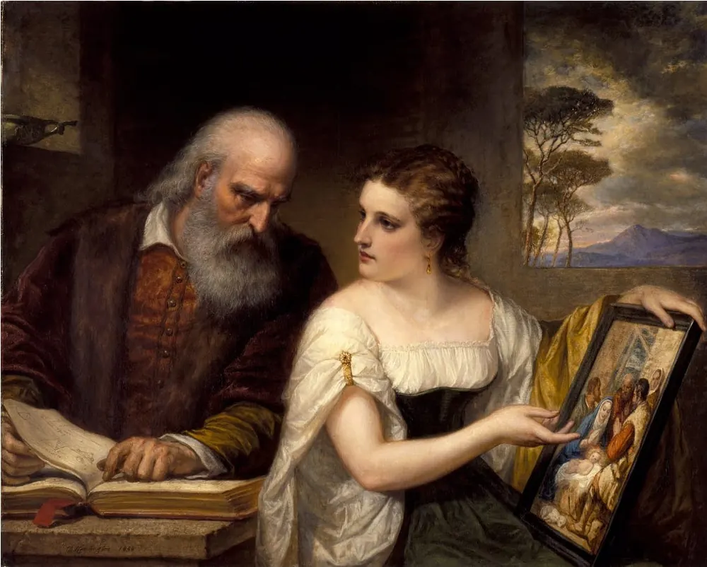
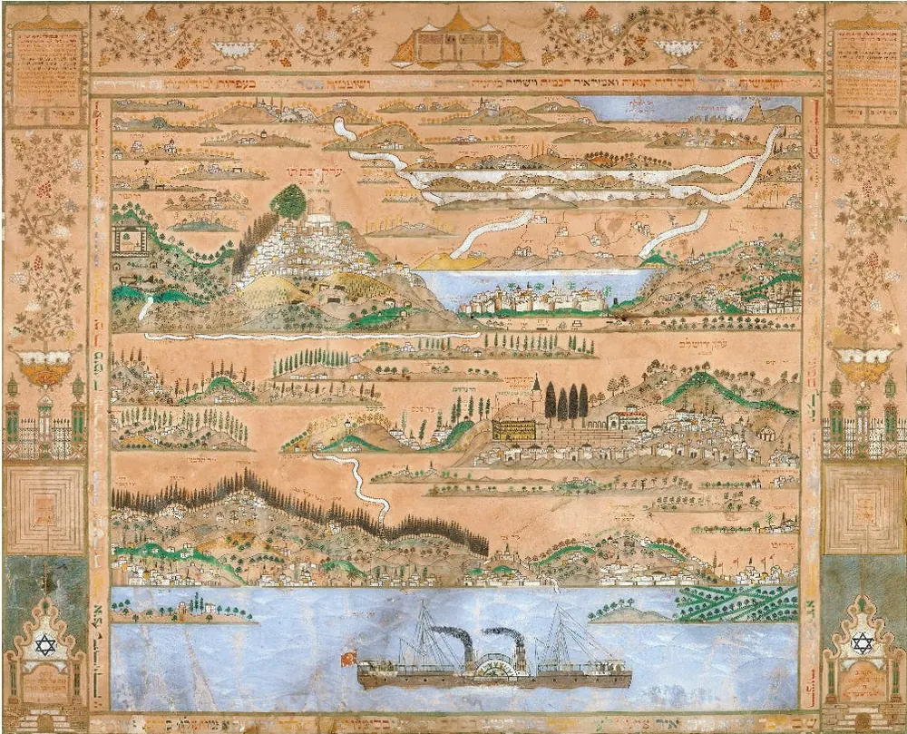
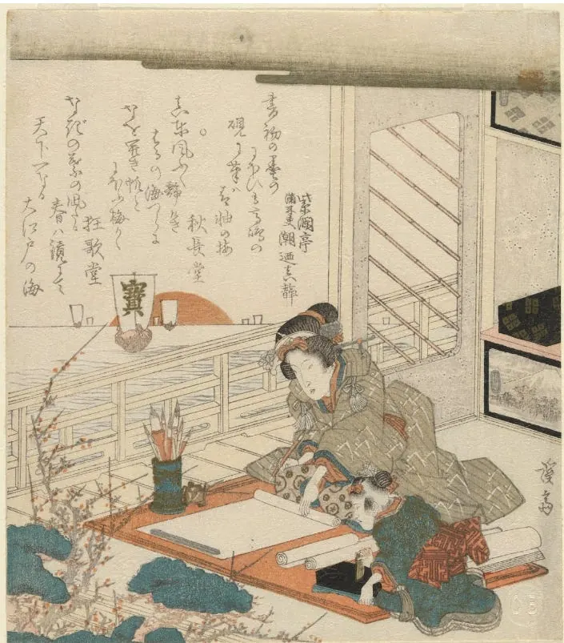
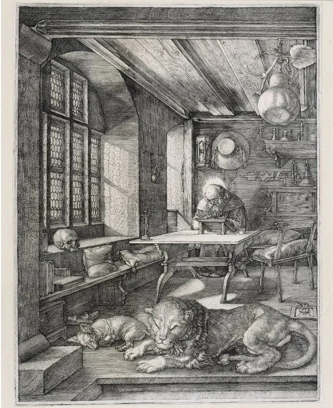

Diario de un Robot · 18 de octubre de 2020October 18, 2020 · Serie: ¿Deberíamos escribir?
¿Cómo deberíamos escribir?
Como nos sintamos cómodos. Encontrar nuestro lugar y nuestra forma de escritura es esencial para desarrollarla a su máximo potencial.
This essay is only available in Spanish for now.

¿De qué veníamos hablando?
Empezamos el ciclo preguntándonos sobre si deberíamos escribir. Luego seguimos hasta establecer cuándo deberíamos escribir. La semana pasada llegamos a qué deberíamos escribir. Hoy terminamos el recorrido: cómo deberíamos escribir.
La respuesta hoy es tan rápida como las otras veces: cómo nos sintamos cómodos. Encontrar nuestro lugar y nuestra forma de escritura es esencial para desarrollarla a su máximo potencial. Quienes ya hayan leído los textos anteriores sabrán que doy las respuestas breves al comienzo, luego seguimos con la explicación.
Este es quizás el otro punto más subjetivo. Como cuando analizamos sobre qué escribir ahora nos encontramos ante una gran variedad de respuestas. Dividamos entonces el tema en sus dos grandes facetas: la filosófica y la práctica.
¿Cómo es la filosofía de escribir?

¿Planear o improvisar?
Según algunos autores, y los libros sobre escritura que consulté, se suele dividir a los escritores en dos grandes grupos: escritores de mapa y escritores de brújula (traducciones habituales del inglés “Plotters & Pantsers”, términos originarios de NaNoWriMo).
Los escritores de brújula son los que van descubriendo la historia mientras la escriben. Suelen tener un norte en mente, ya sea el final o las acciones de sus personajes. Siguen por ese camino para descubrir la narrativa sobre la marcha. Los ejemplos típicos de este grupo son Stephen King, Margaret Atwood y George R.R. Martin (y quizás J.R.R. Tolkien). Este método tiene la ventaja de darnos la libertad de cambiar de camino mientras avanzamos. Brinda flexibilidad y permite recalcular al encontrar bloqueos o falta de inspiración.
“Obvio, el escritor puede imponer su control; solo que es una pésima idea. Escribir ficción controlada se llama ‘plotting’ (planear). Abrochar tu cinturón y dejar que la historia tome las riendas… eso es llamado ‘storytelling’ (contar historias). Contar historias es tan natural como respirar; planear es la versión literaria de la respiración artificial.” ―Stephen King
Los escritores de mapa planean meticulosamente su historia antes de comenzar a escribir. Construyen un esquema del proyecto describiendo a sus personajes, los arcos narrativos, e invirtiendo mucho tiempo en prepararse de antemano. La mayoría de los escritores bosquejan antes de comenzar y en este caso hablamos del extremo de un espectro posible de maneras. Los esquemas pueden ser tan detallados como necesitemos, tanto en papel como en nuestra computadora. Algunos autores en este grupo incluyen a J.K. Rowling, Brandon Sanderson y C.S. Lewis. Una aclaración no menor es que nuestro esquema no debe controlar nuestra escritura, la capacidad de adaptación dentro de lo planeado es esencial.
“Los planes son de poca importancia, pero planear es esencial.” ―Atribuida, con dudas, a Dwight D. Eisenhower
Ambos métodos tienen sus ventajas y desventajas. Lo importante es encontrar el que nos convenga. No parece haber una regla que establezca que una manera sea mejor que la otra. Lo que sí debemos tener en cuenta es que esto no implica esperar a que la inspiración nos llegue con un esquema o con un norte. La pasividad no suele fomentar la producción artística.
“Cuando baje la inspiración, que me encuentre trabajando” — Pablo Picasso
¿Toda escritura es para compartir?
A la hora de escribir o contar una historia la presencia de un narrador es tan importante como la de una audiencia. Establecimos que uno debe escribir lo que disfruta, pero saber que alguien nos va a leer puede cambiar algunas cosas. Muchas veces intentamos crear algo que suene verdadero, esto puede llevarnos a redactar diálogo innecesario, descripciones superfluas o aclaraciones redundantes.
La vida es aún más extraña que la ficción, porque la ficción debe tener sentido. —John Dufresne (de acá)
Al escribir no solo buscamos describir y relatar, tenemos interés en generar emociones en quien nos lea. Debemos crear la ilusión momentánea de que están viviendo en nuestra historia. La manera de lograrlo es evocar a los sentidos, usar palabras elegidas con precisión, esquivando fórmulas, clichés y lugares comunes.
¿Cómo es la práctica de escribir?

¿Tinta o luz?
La escritura se ha dado sobre distintos formatos. Hoy priman dos maneras: a mano o por teclado. Cada manera tiene sus ventajas y contras.
Por un lado, la escritura a mano tiene para muchos una sensación de mayor intimidad y personalidad. Ya sea con birome o pluma nos permite escribir con rapidez, tachar, señalar, dibujar y hacer un bollo la hoja errada. Para muchos (es mi caso) está asociado a una escritura en particular: el diario. Este es un medio excelente para practicar y parece verse favorecido por la conexión directa entre el movimiento de la mano, la figura encorvada y la cabeza. Este método implica un paso extra de copia para su versión digital.
Por otro lado, tenemos la escritura en un teclado. Voy a dejar de lado la máquina de escribir que, a pesar de ser más moderna que la escritura a mano, pasó a ser anacrónica y no hay motivos para usarla. Escribir en una computadora tiene muchísimas ventajas; las más evidentes son la incapacidad de perder un archivo (si tenemos internet), la posibilidad de cambiar palabras o frases al instante, y la facilidad para compartir (a veces arma de doble filo). En contra, la accesibilidad a internet puede ser una distracción fácil o apresurar compartir un texto que no esté terminado.
¿Dónde escribir?
El espacio de trabajo es importantísimo. Esta frase, que suena obvia, no parece estar siempre en nuestra cabeza cuando escribimos. Al ser una actividad flexible podemos hacerlo en cualquier espacio, ya sea desde la mesada de la cocina, en la mesita del avión, una mesa de bar o nuestro escritorio. A pesar de poder hacerlo en cualquier lugar, no es indistinto dónde lo hacemos. Solemos tomar el espacio como nos llega y pocos ponen esmero en diseñarlo a su medida. Hay mucho que puede estar interviniendo en nuestro proceso.
Las molestias a la hora de escribir pueden ser imperceptibles, desde comer mientras trabajamos, la orientación del escritorio, la luz, el ruido, el paso de otras personas, entre otros. Las interrupciones son enemigas del arte. Sí, hay quienes defienden que pueden ser provechosas, pueden iluminar una conexión que antes no estaba, pero en general nos roban la concentración y dificultan terminar lo planeado. A la hora de escribir debemos quitar la maleza y dejar el camino abierto para que fluya nuestra creatividad.
¿Hay que escribir sentado?

La imagen de quienes escriben puede resultarnos bastante estereotipada. Una persona encerrada sobre sí misma, incluso encorvada sobre su escritorio, la pluma en mano, escribiendo largas noches de desvelo, y cuando no, algo de locura. Sin embargo, hay más de una figura que encarna lo contrario. Uno es el caso de Goethe que escribió gran parte de su obra parado, en un escritorio a la altura del pecho. Otros casos para mencionar son Hemingway o Nietzsche.
Escribir y viajar ensanchan tu culo si no tu mente y me gusta escribir de pie. — Ernest Hemingway (traducción propia de acá)
La imagen de escribir parado nos remite a otra que también nos puede servir. El altar y el espacio sagrado.
Piedra o lugar elevado donde se celebraban ritos religiosos, como ofrendas y sacrificios a los dioses.
A pesar de muchas veces encarar el proceso artístico como algo que requiere de rutina y comportamientos estereotipados, no hay que olvidar la parte mística de la creación. La creatividad es la capacidad de establecer una unión entre dos puntos que antes no estaban conectados y hay algo de mágico en eso. Quizás la imagen no es la de un altar actual, sino un sitio pagano, algo como las guaridas de las hadas celtas o los santuarios shinto. Un espacio propio al que volvemos con ofrendas de tiempo y esfuerzo para, con algo de suerte, recibir un texto a cambio.
Que pasen un lindo domingo, nos hablamos pronto.
Fidel